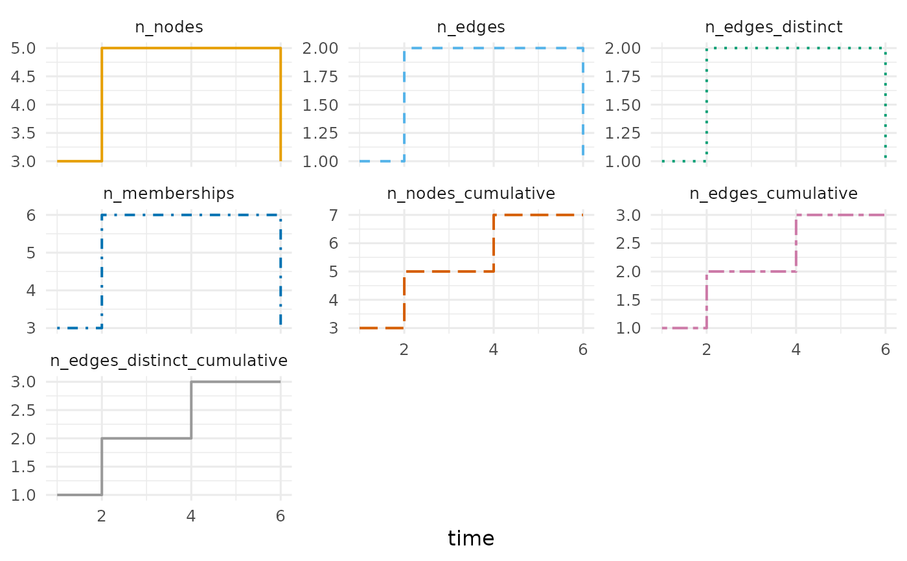

Counts, on a measurement grid, the nodes and hyperedges present in the
temporal hypergraph: the descriptive time series of Coupette et al.
(2024, Figures 4a and 5b). Hyperedges are counted twice, as they are
(n_edges, the multi-hypergraph) and as distinct member sets
(n_edges_distinct, the binary hypergraph), so the two representations of
the paper's Table 2 can be read against each other over time.
Usage
hg_growth(
x,
start = NULL,
end = NULL,
step = NULL,
window = NULL,
at = NULL,
mode = c("active", "cumulative"),
components = FALSE
)
hypergraph_growth(
x,
start = NULL,
end = NULL,
step = NULL,
window = NULL,
at = NULL,
mode = c("active", "cumulative"),
components = FALSE
)
# S3 method for class 'honets_series'
plot(x, columns = NULL, facets = TRUE, ...)Arguments
- x
A
honets_seriestable (forplot).- start, end
Bounds of the measured period, as numbers on the hypergraph's clock or dates for a calendar hypergraph. Default: the observation window.
- step
How often to measure, in the hypergraph's time unit.
NULL(default) measures at every event time.- window
How much time each measurement covers. Defaults to
stepwhen a step is given (a partition of the period) and to0otherwise (a point sample); larger thanstepgives a rolling window;"all"measures the whole period as one window.- at
Instants to measure instead of a grid; may be a vector.
- mode
"active"(default) or"cumulative", see Description. The former"all"is deprecated: it is"cumulative"withatunset.- components
Also report the connectivity of the measured hypergraph at each time: the number of connected components, the share of its nodes in the largest, and its diameter (longest shortest path between two nodes sharing a chain of hyperedges)? Default
FALSE; the computation is a breadth-first search per node and time.- columns
Which numeric columns to draw; default all but
time.- facets
Draw one panel per column (default
TRUE, because node and hyperedge counts live on different scales) or all columns in one panel with a legend.- ...
Unused; for S3 consistency.
Value
A base data.frame of class honets_series, one row per window,
with time (the window start on the hypergraph's clock), n_nodes,
n_edges, n_edges_distinct, n_memberships, and for
mode = "active" also n_nodes_cumulative, n_edges_cumulative and
n_edges_distinct_cumulative. With components = TRUE, further
n_components, largest_component (share of active nodes) and
diameter. plot() draws each count against time, on the calendar
when the hypergraph has one.
For plot, a ggplot object.
Details
mode = "active" counts what each window measures – an interval
hyperedge active in it, a contact hyperedge occurring in it – and adds
the _cumulative columns, the hyperedges begun by the end of the window,
the static aggregate that a point-aggregation model would report.
mode = "cumulative" reports only that growing view, and then counts a
node from its own entry time when the constructor received a node table
with a start column, otherwise from the first hyperedge that contains
it.
References
Coupette, C., Hartung, D., & Katz, D. M. (2024). Legal hypergraphs. Philosophical Transactions of the Royal Society A, 382(2270), 20230141. doi:10.1098/rsta.2023.0141
Examples
seats <- data.frame(
case = rep(c("A", "B", "C"), each = 3),
arbitrator = c("p1", "a1", "a2", "p2", "a1", "a3", "p1", "a4", "a5"),
constituted = rep(c(1, 2, 4), each = 3), concluded = rep(c(4, 3, 6), each = 3)
)
thg <- temporal_hypergraph(seats, actor = "arbitrator", group = "case",
start = "constituted", end = "concluded")
growth <- hg_growth(thg)
growth
#> time n_nodes n_edges n_edges_distinct n_memberships n_nodes_cumulative
#> 1 1 3 1 1 3 3
#> 2 2 5 2 2 6 5
#> 3 3 5 2 2 6 5
#> 4 4 5 2 2 6 7
#> 5 6 3 1 1 3 7
#> n_edges_cumulative n_edges_distinct_cumulative
#> 1 1 1
#> 2 2 2
#> 3 2 2
#> 4 3 3
#> 5 3 3
plot(growth)

# a regular grid: every two steps, each window two steps wide
hg_growth(thg, step = 2)
#> time n_nodes n_edges n_edges_distinct n_memberships n_nodes_cumulative
#> 1 1 5 2 2 6 5
#> 2 3 7 3 3 9 7
#> 3 5 3 1 1 3 7
#> n_edges_cumulative n_edges_distinct_cumulative
#> 1 2 2
#> 2 3 3
#> 3 3 3